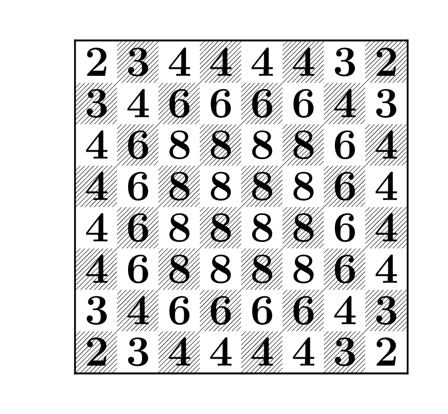

Chapter 8 Stationary Distributions
Transitions between different states of a Markov chain describe short-time behavior of the chain. In most models used in physical and social sciences, systems change states many times per second. In a rare few, the time scale of the steps can be measured in hours or days. What is of interest, however, is the long-term behavior of the system, measured in thousands, millions, or even billions of steps. Here is an example: the New York Stock Exchange typically sees of millions of trades per day, and each trade changes the price (state) of a stock a little bit. What is of interest to an investor is, however, the distribution of the stock-price in 6 months, in a year or, in 30 years - just in time for retirement. A back-of-an-envelope calculation shows that, assuming the same frequency, the number of trades over 30 years would be of the order of a billion. So, a grasp of very-long time behavior of a Markov chain is one of the most important achievments of probability in general, and stochastic-process theory in particular. We only scratch the surface in this lecture.
8.1 Stationarity and stationary distributions
Definition. A stochastic process \(\{X_n\}_{n\in {\mathbb{N}}_0}\) is said to be stationary if the random vectors \[(X_0,X_{1},X_{2},\dots, X_{k})\text{ and } (X_m,X_{m+1},X_{m+2},\dots, X_{m+k})\] have the same (joint) distribution for all \(m,k\in{\mathbb{N}}_0\).
For stationary processes, all random variables \(X_0, X_1, \dots\) have the same distribution (just take \(k=0\) in the definition). That condition is, however, only necessary. The pairs \((X_0,X_1)\) and \((X_m,X_{m+1})\) should be equally distributed as random vectors, the same for triplets, etc. Intuitively, a stochastic process is stationary if, statistically speaking, it does not evolve. Its probabilistic behavior today is the same as its probabilistic behavior in a billion years. It is somethings useful to think about stationarity in the following way; if a system is let to evolve for a long time, it will reach an equilibrium state and fluctuate around it forever. We can expect that such a system will look similar a million years from now and a billion years from now. It might, however, not resemble its present state at all. Think about a glass of water in which we drop a tiny drop of ink. Immediately after that, the glass will be clear, with a tiny black speck. The ink starts to diffuse and the speck starts to grow immediately. It won’t be long before the whole glass is of uniform black color - the ink has permeated every last “corner” of the glass. After that, nothing much happens. The ink will never spontaneously return to its initial state11.
Ink is composed of many small particles which do not interact with each other too much. They do, however, get bombarded by the molecules of water, and this bombardment makes them behave like random walks12 which simply bounce back once they hit the glass wall. Each ink particle will wander off in its own direction, and quite soon, they will be “everywhere”. Eventually, the distribution of the ink in the glass becomes very close to uniform and no amount of further activity will change that - you just cannot get more “random” then the uniform distribution in a glass of water.
Let us get back to mathematics and give two simple examples; one of a process which is not stationary, and the other of a typical stationary process.
Example.
The simple random walk is not stationary. Indeed, \(X_0\) is a constant, while \(X_1\) takes two values with equal probabilities, so they cannot have the same distribution. Indeed, the distribution of \(X_n\) is more and more “spread-out” as time passes. Think of an ink drop in an infinite ocean. The dark, ink-saturated, region will get larger and larger, but it will never stabilize as there is always more ocean to invade.
For an example of a stationary process, take a regime switching chain \(\{X_n\}_{n\in {\mathbb{N}}_0}\) with \(p_{01}=p_{10}=1\), and the initial distribution \({\mathbb{P}}[X_0=0]={\mathbb{P}}[X_0=1]=\tfrac{1}{2}\). Then \(X_n=X_0\) if \(n\) is even, and \(X_n=1-X_0\) if \(n\) is odd. Moreover, \(X_0\) and \(1-X_0\) have the same distribution (Bernoulli with \(p=\tfrac{1}{2}\)), and, so \(X_0, X_1,\dots\) all have the same distribution. How about \(k\)-tuples? Why do \((X_0,X_1, \dots, X_k)\) and \((X_m,X_{m+1},\dots, X_{m+k})\) have the same distribution? For \(i_0,i_1,\dots, i_k\in \{0,1\}\), by the Markov property, we have \[\label{equ:380C} \begin{split} {\mathbb{P}}[ X_0=i_0, X_1=i_i, \dots, X_{k}=i_k] &= {\mathbb{P}}[X_0= i_0] p_{i_0 i_1} p_{i_1 i_2}\dots p_{i_{k-1} i_{k}}\\ &= \tfrac{1}{2}p_{i_0 i_1} p_{i_1 i_2}\dots p_{i_{k-1} i_{k}}. \end{split}\] In the same manner, \[\label{equ:2D2C} \begin{split} {\mathbb{P}}[ X_m=i_0, X_1=i_i, \dots, X_{m+k}=i_k]&= {\mathbb{P}}[X_m= i_0] p_{i_0 i_1} p_{i_1 i_2}\dots p_{i_{k-1} i_{k}}\\ &= \tfrac{1}{2}p_{i_0 i_1} p_{i_1 i_2}\dots p_{i_{k-1} i_{k}}, \end{split}\] so the two distributions are identical.
The second example above is quite instructive. We took a Markov chain and gave it an initial distribution with the property that \(X_0\) and \(X_m\) have the same distribution for all \(m\in{\mathbb{N}}_0\). Magically, the whole process became stationary. This is not a coincidence; we can play the same trick with any Markov chain, as long as the initial distribution with the above property can be found. Actually, such a distribution is so important that it even has a name:
Definition. A distribution \(\pi=(\pi_i)_{i\in S}\) on the state space \(S\) of a Markov chain with transition matrix \(P\) is called a stationary distribution if \[{\mathbb{P}}[X_1=i]=\pi_i \text{ for all } i\in S, \text{ whenever } {\mathbb{P}}[X_0=i]=\pi_i,\text{ for all } i\in S.\]
In words, \(\pi\) is called a stationary distribution if the distribution of \(X_1\) is equal to that of \(X_0\) when the distribution of \(X_0\) is \(\pi\). Here is a hands-on characterization:
Proposition. A nonnegative vector \(\pi=(\pi_i,i\in S)\) with \(\sum_{i\in S} \pi_i=1\) is a stationary distribution if and only if \[\pi P=\pi,\] when \(\pi\) is interpreted as a row vector. In that case the Markov chain with initial distribution \(\pi\) and transition matrix \(P\) is stationary and the distribution of \(X_m\) is \(\pi\) for all \(m\in{\mathbb{N}}_0\).
Suppose, first, that \(\pi\) is a stationary distribution, and let \(\{X_n\}_{n\in {\mathbb{N}}_0}\) be a Markov chain with initial distribution \({a}^{(0)}=\pi\) and transition matrix \(P\). Then, \[{a}^{(1)}={a}^{(0)}P=\pi P.\] By the assumption, the distribution \({a}^{(1)}\) of \(X_1\) is \(\pi\). Therefore, \(\pi= \pi P\).
Conversely, suppose that \(\pi=\pi P\). Let \(\{X_n\}_{n\in {\mathbb{N}}_0}\) be a Markov chain with initial distribution \(\pi\) and transition matrix \(P\). We need to show that \(\{X_n\}_{n\in {\mathbb{N}}_0}\) is stationary. In order to do that, we first note that all random variables \(X_m\), \(m\in{\mathbb{N}}_0\), have the same distribution. Indeed, the distribution \({a}^{(m)}\) of \(X_m\) is given by \[{a}^{(m)}= {a}^{(0)} P^m= \pi P^m = (\pi P) P^{m-1}= \pi P^{m-1}=\dots=\pi.\] Next, we pick \(m,k\in{\mathbb{N}}_0\) and a \(k+1\)-tuple \(i_0, i_1, \dots, i_k\) of elements of \(S\). By the Markov property, we have \[\label{equ:5716} \begin{split} {\mathbb{P}}[ X_m=i_0, X_{m+1}=i_1,\dots, X_{m+k}=i_{k}]&= {\mathbb{P}}[X_m=i_0] p_{i_0 i_1} p_{i_1 i_2} \dots p_{i_{k-1} i_{k}}\\ &= \pi_{i_0} p_{i_0 i_1} p_{i_1 i_2} \dots p_{i_{k-1} i_{k}}. \end{split}\] This last expression does not depend on \(m\), so we can conclude that \(\{X_n\}_{n\in {\mathbb{N}}_0}\) is stationary.
Problem 8.1 A model of social mobility of families posits three different social classes (strata), namely “lower”, “middle”, and “upper”. The transitions between these classes (states) for a given family are governed by the following transition matrix: \[P = \begin{bmatrix} 1/2 & 1/2 & 0 \\ 1/3 & 1/3 & 1/3 \\ 0 & 1/3 & 2/3 \end{bmatrix}.\] Find all stationary distributions of this chain.
Solution. To compute \(\pi\), we start by writing down the following system of three linear equations: \[\begin{array}{rcrcrcr} \pi_1 &=& \frac{1}{2}\, \pi_1 & +& \frac{1}{3}\, \pi_2 && \\ \pi_2 &=& \frac{1}{2}\, \pi_1 & +& \frac{1}{3}\, \pi_2 &+& \frac{1}{3}\, \pi_3 \\ \pi_3 &=& && \frac{1}{3}\, \pi_2 &+& \frac{2}{3}\, \pi_3 \end{array}\] We solve the system and obtain that any triplet \((\pi_1,\pi_2,\pi_3)\) with \[\label{equ:in-pi2} \pi_1 = \frac{2}{3} \pi_2 \text{ and }\pi_3 = \pi_2\] is a solution. Of course, \(\pi\) needs to be a probability distribution, so we also need to require that \(\pi_1+\pi_2+\pi_3 = 1\). We plug in the expressions for \(\pi_1\) and \(\pi_3\) in terms of \(\pi_2\) obtained above into it to conclude that \(\pi_2 = 3/8\). From there, the unique stationary distribution is given by \[\pi = ( \frac{2}{8}, \frac{3}{8}, \frac{3}{8} ).\]
Let us get back to the story about the glass of water and let us analyze a simplified model of that phenomenon. Our glass will be represented by the set \(\{0,1,2,\dots, a\}\), where \(0\) and \(a\) are the positions adjacent to the walls of the glass. The ink particle performs a version simple random walk inside the glass - it moves to the left, to the right or stays put with equal probabilities, namely \(\frac{1}{3}\). Once it reaches the state \(0\) further passage to the left is blocked by the wall, so it either takes a step to the right to position \(1\) (with probability \(\frac{1}{3}\)) or stays put (with probability \(\frac{2}{3}\)). The same thing happens at the other wall. All in all, we get a Markov chain with the following transition matrix \[P= \begin{bmatrix} \frac{2}{3} & \frac{1}{3} & 0 & 0 & \dots & 0 & 0 & 0 \\ \frac{1}{3} & \frac{1}{3} & \frac{1}{3} & 0 & \dots & 0 & 0 & 0 \\ 0 & \frac{1}{3} & \frac{1}{3} & \frac{1}{3} & \dots & 0 & 0 & 0 \\ \vdots & \vdots & \vdots &\vdots & \ddots & \vdots & \vdots & \vdots \\ 0 & 0 & 0 & 0 & \dots & \frac{1}{3} & \frac{1}{3} & 0 \\ 0 & 0 & 0 & 0 & \dots & \frac{1}{3} & \frac{1}{3} & \frac{1}{3} \\ 0 & 0 & 0 & 0 & \dots & 0 & \frac{1}{3} & \frac{2}{3} \\ \end{bmatrix}.\] Let us see what happens when we start the chain with a distribution concentrated at \(a/2\); a graphical representation (histogram) of the distributions of \(X_0\), \(X_{1}\), \(X_{3}\), \(X_{25}\), \(X_{100}\) and \(X_{500}\) when \(a=10\) represents the behavior of the system very well :

How about if we start from a different initial distribution? Here are the same plots when the initial distribution is concentrated at \(0\):

As you can see, the distribution changes rapidly at first, but then, once it has reached the “equilibrium” it changes remarkably little (compare \(X_{100}\) and \(X_{500}\); when \(X_0=a/2\), even \(X_{25}\) is not very far). Also, the “equilibrium” distribution seems to be uniform and does not depend on the initial distribution; this is exactly what you would expect from a long-term distribution of ink in a glass.
Let us show that the uniform distribution \[\pi=\Big(\frac{1}{a+1}, \frac{1}{a+1}, \dots, \frac{1}{a+1}\Big)\] is indeed the stationary distribution. For that we need to show that it solves the system \(\pi=P\pi\), which, expanded, looks like this \[\begin{split} \pi_0 & = \frac{2}{3} \pi_0+ \frac{1}{3} \pi_1 \\ \pi_1 & = \frac{1}{3} (\pi_0 + \pi_1 + \pi_2) \\ \pi_2 & = \frac{1}{3} (\pi_1 + \pi_2 + \pi_3) \\ & \hspace{0.5em} \vdots \\ \pi_{a-1} & = \frac{1}{3} (\pi_{a-2}+\pi_{a-1} + \pi_{a}) \\ \pi_{a} & = \frac{1}{3} \pi_{a-1}+ \frac{2}{3} \pi_{a} \end{split}\] It is immediate that \(\pi_0 = \pi_1 = \dots = \pi_a = \frac{1}{a+1}\) is a probability distribution that solves the system above. On the other hand, the first equation yields \(\pi_1 = \pi_0\), the second one that \(\pi_2 = 2 \pi_1 - \pi_0 = \pi_0\), the third \(\pi_3 = 2 \pi_2 - \pi_1 = \pi_0\), etc. Therefore all \(\pi_i\) must be the same, and, since \(\sum_{i=0}^a \pi_i = 1\), we conclude that the uniform distribution is the only stationary distribution.
Can there be more than one stationary distribution? Can there be none? Sure, here is an example:
Example.
For \(P=I\), any distribution is stationary, so there are are infinitely many stationary distributions.
A simple example where no stationary distribution exists can be constructed on an infinite state space (but not on a finite space, as we will soon see). Take the Deterministically Monotone Markov chain. The transition “matrix” looks like the identity matrix, with the diagonal of ones shifted to the right. Therefore, the system of equations \(\pi=\pi P\) reads \[\pi_1= \pi_2, \pi_2=\pi_3, \dots, \pi_n=\pi_{n+1}, \dots,\] and so, for \(\pi\) to be a stationary distribution, we must have \(\pi_n=\pi_1\) for all \(n\in{\mathbb{N}}\). Now, if \(\pi_1=0\), \(\pi\) is not a distribution (it sums to \(0\), not \(1\)). But if \(\pi_1>0\), then the sum is \(+\infty\), so \(\pi\) is not a distribution either. Intuitively, the chain never stabilizes, it just keeps moving to the right ad infinitum.
The example with many stationary distributions can be constructed on any state space, but the other one, where no stationary distribution exists, had to use an infinite one. Was that necessary? Yes. Before we show this fact, let us analyze the relation between stationary distributions and the properties of recurrence and transience. Here is our first result:
Proposition. Suppose that the state space \(S\) of a Markov chain is finite and let \(S=C_1\cup C_2\cup \dots \cup C_m \cup T\) be its canonical decomposition into recurrent classes \(C_1, \dots, C_m\) and the set of transient states \(T\). Then the following two statements are equivalent:
\(\pi\) is a stationary distribution, and
\(\pi_{C_k}= \pi_{C_k} P_k\), \(k=1,\dots, m\), and \(\pi_T=(0,0,\dots, 0)\),
where \[P= \begin{bmatrix} P_1 & 0 & 0 & 0 \\ \vdots & \ddots & \vdots & 0 \\ 0 & 0 & P_m & 0 \\ & R & & Q \end{bmatrix},\] is the canonical form of the transition matrix, \(\pi_{C_k}=(\pi_i, i\in C_k)\), \(k=1,2,\dots, m\) and \(\pi_T=(\pi_i, i\in T)\).
Proof. We write the equation \(\pi=\pi P\) coordinatewise as \(\pi_j=\sum_{i\in S} \pi_i p_{ij}\) and, by distinguishing the cases \(i\in C_k\), \(k\in\{1,2,\dots, m\}\), and \(i\in T\), we get the following sytem of matrix equations (alternatively, just write the system \(\pi= \pi P\) in the block-matrix form according to the cannonical decomposition above): \[\pi_{C_k} = \pi_{C_K} P_{C_k} + \pi_T R,\ k=1,\dots, m, \text{ and } \pi_T = \pi_T Q.\] The last equality can be read as follows: \(\pi_T\) is in a row null-space of \(I-Q\). We know, however, that \(I-Q\) admits an inverse, and so it is a regular square matrix. Its row null-space (as well as its column null-space) must be trivial, and, consequently, \(\pi_T=0\).
Having established that \(\pi_T=0\), we can de-couple the system of equations above and write it as \[\pi_{C_k} = \pi_{C_K} P_{k},\ k=1,\dots, m, \text{ and } \pi_T = (0,0,\dots, 0),\] which is exactly what we needed to prove.
The other implication - the proof of which consists of a verification of the fact that each distribution from (2) above is indeed a stationary distribution - is left to the reader. QED
The moral of the story of the Proposition above is the following: in order to compute the stationary distribution(s), classify the states and find the canonical decomposition of the state space. Then, set \(\pi_i=0\) for any transient state \(i\). What remains are recurrent classes, and you can analyize each one separately. Note, however, that \(\pi_{C_k}\) does not need to be a real distribution on \(C_k\), since \(\sum_{i\in C_k} (\pi_{C_k})_i\) does not need to equal \(1\). However, unless \(\pi_{C_k}=(0,0,\dots, 0)\), we can always multiply all its elements by a constant to make the sum equal to \(1\).
8.2 Stationary distributions for finite irreducible chains and Kac’s lemma
We now know what the general structure of the set of all stationary distributions is, but we still have no clue as to whether they actually exist. Indeed, our results so far had the following form: “If \(\pi\) is a stationary distribution, then …”. Luckily, these results also allow us to focus our search on single recurrent classes, or, more comfortably, chains consisting of a single recurrent class. They are important enough to get a name:
Definition. A Markov chain is said to be irreducible if it has only one class.
We also assume from now on that the state space is finite. That rules out, in particular, our non-existence example above which required an infinite chain. We will see that that is not a coincidence, and that the situation is much cleaner in the finite setting. In fact, our next result (known as Kac’s lemma, but we state it here as a theorem) gives a very nice answer to the question of existence and uniqueness, with an unexpected benefit:
Theorem (Kac’s theorem) Let \(\{X_n\}_{n\in {\mathbb{N}}_0}\) be an irreducible Markov chain with a finite state space. Then
there exists a unique stationary distribution \(\pi = (\pi_j)_{j\in S}\),
moreover, it is given by the following formula: \[\pi_j= \frac{\nu_{ij}}{m_i} ,\ j\in S,\] where \(i\) is an arbitrary but fixed state, and \[\nu_{i j}={\mathbb{E}}_i\left[ \sum_{n=0}^{T_i(1)-1} \mathbf{1}_{\{X_n=j\}}\right] \text{ and }m_i = {\mathbb{E}}_i[ T_i(1)]<\infty\] are the expected number of visits to state \(j\) in between two consecutive visits to state \(i\), and the expected return time to \(i\), respectively.
Even though it is not exceedingly hard, the proof of this proposition is a bit technical, so we omit it. It is important, however, to understand what the result states:
The stationary distribution \(\pi\) exists and is unique in any irreducible finite Markov chain. Moreover, \(\pi_i>0\) for all \(i\in S\).
The expected number of visits to the state \(j\) in between two consecutive visits to the state \(i\) can be related to a stationary distribution by \(\nu_{ij}= m_i \pi_j\). By uniqueness, the quotient \(\frac{\nu_{ij}}{m_i}\) does not depend on the state \(i\).
When we set \(j=i\), \(\nu_{ii}\) counts the number of visits to \(i\) between two consecutive visits to \(i\), which is always equal to \(1\) (the first visit is counted and the last one is not). Therefore, \(\nu_{ii}=1\), and so \(\pi_i=\frac{1}{m_i}\) and \(\nu_{ij} = \pi_j/\pi_i\).
All of this is typically used in the following way: one first computes the unique stationary distribution \(\pi\) by solving the equation \(\pi=\pi P\) and then uses it to determine \(m_i\) or the \(\nu_{ij}\)’s. Here is a simple problem:
Problem 8.2 Suppose that traffic statistics on a given road are as follows: on average, three out of every four trucks are followed by a car, but only one out of every five cars is followed by a truck. A truck passes by you. How many cars do you expect to see before another truck passes?
Solution. The type of the vehicle passing by you (car or truck) can be modeled by a Markov chain with two states and the transition matrix: \[P = \begin{bmatrix} \frac{4}{5} & \frac{1}{5} \\ \frac{3}{4} & \frac{1}{4} \end{bmatrix},\] with the first row (column) corresponding to the state “car”. We are interested in the number of “visits” to the state “car” (\(j=1\)) between two visits to the state “truck” (\(i=2\)), which we denoted by \(\nu_{21}\) in Kac’s theorem. According to the same theorem, it is a good idea to find the (unique) stationary distribution first. The equations are \[\begin{aligned} \pi_1 &= \frac{4}{5} \pi_1 + \frac{3}{4} \pi_2\\ \pi_2 &= \frac{1}{5} \pi_1 + \frac{1}{4} \pi_2,\end{aligned}\] which, with the additional requirement \(\pi_1+\pi_2 = 1\), give \[\pi_1 = \tfrac{15}{19}, \pi_2 = \tfrac{4}{19}.\] Since \(v_{ij} = m_i \pi_j\), we have \(v_{21} = m_2 \pi_1 = \tfrac{15}{19} m_2\). We also know that \(m_2 = 1/\pi_2 = \frac{19}{4}\), and, so, we expect to see \(\frac{15}{4} = 3.75\) cars between two consecutive trucks.
In this particular case, we could have answered the question by computing the expected return time \(m_2 = {\mathbb{E}}_2[ T_2(1)]\) to the state \(2\). As above, \(m_2 = 1/\pi_2 = \tfrac{19}{4}\). We have to be careful, because the state \(2\) itself is counted exactly once in this expectation, so \(m_2 = \tfrac{19}{4}\) does not only count all the cars between two trucks, but also one of the trucks. Therefore, the number of cars only is \(\frac{19}{4} - 1 = \frac{15}{4}\), which is exactly the number we obtained above.
The family of Markov chains called random walks on graphs provides for many interesting and unexpected applications of Kac’s theorem. We start by remembering what a (simple) graph is.
Definition. A simple graph is defined by a finite set \(V\) (whose elements are called vertices or nodes) and a set \(E\) if unordered pairs of distinct vertices (whose elements are called edges).
Intuitively, a simple graph is a finite collection of points, some of which are connected by lines. We do not allow loops (edges from a vertex to itself) or multiple edged between vertices. For two vertices \(i\) and \(j\) write \(i \sim j\) if there is an edge between \(i\) and \(j\), and say that \(i\) and \(j\) are neighbors . The number of neighbors of the vertex \(i\) called the degree of \(i\), and is denoted by \(d(i)\).
Given a simple graph \(G\), let the random walk on \(G\) be the Markov chain defined as follows:
The set of states \(S\) is the set of vertices \(V\) of the graph \(G\).
To move from a state (vertex) to the next one, chose one of its neighbors, uniformly at random, and jump to it. More precisely, \[p_{ij} = \begin{cases} 0 & i \not \sim j \\ 1/d(i) & i \sim j. \end{cases}\]
As long as the underlying graph is connected (you can move from any state to any other state by traveling on edges only), the corresponding random walk is irreducible and each state is recurrent. The interesting thing is that there is a very simple expression for the (unique) stationary distribution. Indeed, if we write our usual system of equations \(\pi = \pi P\) that defines \(\pi\) in this case, we obtain \[\pi_j = \sum_i \pi_i p_{ij} = \sum_{i: i\sim j} \pi_i \frac{1}{d(i)}.\] If we plug in \(\pi_i = d(i)\) into the right-hand side, we get \(d(j)\), because there are \(d(j)\) terms, each of which equals \(1\). This matches the left-hand side, so we have a solution to \(\pi = \pi P\). The only thing missing is that these \(\pi\)s do not add up to \(1\). That is easily fixed by dividing by their sum, and we obtain the following nice expression for the stationary distribution: \[\pi_i = \frac{d(i)}{ \sum_{j\in V} d(j) }.\]
Example. A interesting example of a random walk on a graph can be constructed on a chessboard. We pick a piece, say knight, and make it choose, uniformly, from the set of all legal moves. This corresponds to a graph whose vertices are the squares the board, with the two vertices connected by an edge if and only if it is legal for a knight to go from one of them to the other in a single move.

What makes all of this possible is the fact that the rules governing the knight’s moves are symmetric. If it can jump from \(i\) to \(j\), then it can also jump from \(j\) to \(i\). We would not be able to construct a random walk on a graph based on the moves of a pawn, for example.
Once we have built the chain, we can check that it is irreducible (do it!), and compute its stationary distribution by computing degrees of all vertices. They are given by the number of different legal moves from each of the 64 squares, as in the following picture

The value assigned to each square by stationary distribution is then simply the number on that square, divided by the sum of all the numbers on the board, which happens to be \(336\).
Kac’s theorem can now be used to answer the following, classical question:
Problem 8.3 A knight starts from the lower left corner of a chessboard, and moves around by selecting one of its legal moves at random at each step, and taking it. What is expected number of moves it will take before it returns to the lower left corner?
Solution. The question is asking for the value of \(m_i = {\mathbb{E}}_i[ T_i(1)]\) where \(i\) is the “lower left corner”. By Kac’s theorem this equals to \(1/\pi_i = 336/2 = 168\). If the knight started from one of the central squares, this time would be \(4\) times shorter (\(42\)). It is also easy to compute the expected number of visits to another state, between two visits to the lower left corner. The answer is simply the degree of that state divided by \(2\) (the degree of the lower left corner).
8.3 Long-run averages
One of the most important properties of stationary distributions is that they describe the long-term behavior of a Markov chain. Before we explain how, let us recall the classical Law of Large Numbers (LLN) for independent variables:
Theorem (Law of Large Numbers). Let \(\{Y_n\}_{n\in {\mathbb{N}}_0}\) be a sequence of independent and identically distributed random variables, such that \({\mathbb{E}}[|Y_0|]<\infty\). Then \[\lim_n \frac{1}{n} \sum\limits_{k=0}^{n-1} Y_k = {\mathbb{E}}[Y_0],\] (in an appropriate, mathematically precise, sense).
A special case goes by the name Borel’s Law of Large Numbers and applies to the case where each \(Y_n\) is a Bernoulli random variable, i.e., takes only the values \(0\) and \(1\) (like tossing a biased coin repeatedly). In this case, we have \(\sum_{k=0}^{n-1} Y_k = N_n\), where \(N_n\) is the number of “successes” (time instances \(k\) when \(Y_k=1\)) up to time \(n\). The quotient \(\frac{1}{n} N_n\) is then the proportion of “successes” among the first \(n\) experiments, and Borel’s law states that it converges towards the “theoretical frequency”, i.e., the probability \(p ={\mathbb{P}}[Y_0=1]\) of a single “success”. Put differently, \(p\) is the long-run proportion of the times \(k\) when \(Y_k=1\).
If we try to do the same with a Markov chain, we run into two problems. First, the random variables \(X_0,X_1,\dots\) are neither independent nor identically distributed. Second, \(X_k\) takes its values in the state space \(S\) which does not necessarily consist of numbers, so the expression \(X_0+X_1\) or \({\mathbb{E}}[X_0]\) does not make sense for every Markov chain. To deal with the second problem, we pick a numerical “reward” function \(f: S{\rightarrow}{\mathbb{R}}\) and form sums of the form \(f(X_0)+f(X_1)+\dots+f(X_{n-1})\). Independence is much more subtle, but the Markov property and irreducibility of the chain can be used as a replacement:
Theorem (Ergodic Theorem for Markov Chains). Let \(\{X_n\}_{n\in {\mathbb{N}}_0}\) be a finite and irreducible Markov chain. For any function \(f: S{\rightarrow}{\mathbb{R}}\) we have \[\lim_n \frac{1}{n} \sum_{k=0}^{n-1} f(X_k) = {\mathbb{E}}_{\pi}[f(X_0)]:=\sum_{j\in S} f(j)\pi_j,\] where \(\pi\) is the (unique) stationary distribution of \(X\).
An important special case - corresponding conceptually to Borel’s law - is when the function \(f\) equals \(0\) except for one state, where it equals \(1\). In more compact notation, we pick a state \(i_0\) and define the function \(f\) by the following formula \[f(i) = \begin{cases} 1 & i = i_0 \\ 0 & i \ne i_0. \end{cases}\] If we apply the Ergodic theorem with that particular \(f\), we immediately get the following nice result:
Proposition. Given a finite and irreducible Markov chain, let \(N^i_n\) denote the number of visits to the state \(i\) in the first \(n\) steps. Then, \[\pi_i = \lim_n \frac{1}{n} N^i_n,\] where \(\pi\) is the chain’s (unique) stationary distribution.
Put another way,
In a finite irreducible Markov chain, the component \(\pi_i\) of the stationary distribution \(\pi\) can be interpreted as the portion (percentage) of time the chain spends in the state \(i\), over a long run.
8.4 Limiting distributions
When we discussed the example of ink diffusing in a glass, we noticed how the distribution of ink quickly reaches the uniform equilibrium state. It is no coincidence that this “limiting” distribution happens to be a stationary distribution. Before we make this claim more precise, let us define rigorously what we mean by a limiting distribution:
Definition. A distribution \(\pi=(\pi_i, i\in S)\) on the state space \(S\) of a Markov chain with transition matrix \(P\) is called a limiting distribution if \[\lim_{n{\rightarrow}\infty} p^{(n)}_{ij}=\pi_j,\] for all \(i,j\in S\).
Note that for \(\pi\) to be a limiting distribution, all the limits in the Definition above must exist. Once they do (and \(S\) is finite), \(\pi\) is automatically a probability distribution: \(\pi_j\geq 0\) (as a limit of non-negative numbers) and \[\sum_{j\in S} \pi_j = \sum_{j\in S} \lim_{n{\rightarrow}\infty} p^{(n)}_{ij} = \lim_{n{\rightarrow}\infty} \sum_{j\in S} p^{(n)}_{ij} =\lim_{n{\rightarrow}\infty} 1 = 1.\] In a Deterministically Monotone Markov Chain we have \(p^{(n)}_{ij}=0\) for \(n> j-i\). Therefore \(\pi_j:=\lim_{n{\rightarrow}\infty} p^{(n)}_{ij} = 0\) for each \(i\), but these \(\pi\)s do not define a probability distribution because they do not add up to \(1\).
Note that the independence on the initial state \(i\) is built into the definition of the limiting distribution: the sequence \(\{p^{(n)}_{ij}\}_{n\in{\mathbb{N}}}\) must tend to the same limit \(\pi_j\) for all \(i\in S\).
Since limits are unique, there can be at most one limiting distribution in a given chain.
The connection with stationary distributions is spelled out in the following propositions:
Proposition. Suppose that a Markov chain with transition matrix \(P\) admits a limiting distribution \(\pi=(\pi_i,i\in S)\). Then \(\pi\) is a stationary distribution.
Proof. To show that \(\pi\) is a stationary distribution, we need to verify that it satisfies \(\pi=\pi P\), i.e., that \[\pi_{j}= \sum_{i\in S} \pi_i p_{ij}.\] We use the Chapman-Kolmogorov equation \(p^{(n+1)}_{ij}= \sum_{k\in S} p^{(n)}_{ik} p_{kj}\) and start from the observation that \(\pi_j=\lim_{n{\rightarrow}\infty} p^{(n+1)}_{ij}\) to get exactly what we need: \[\pi_j=\lim_{n{\rightarrow}\infty} p^{(n+1)}_{ij}= \lim_{n{\rightarrow}\infty} \sum_{k\in S} p^{(n)}_{ik} p_{kj} = \sum_{k\in S} (\lim_{n{\rightarrow}\infty} p^{(n)}_{ik}) p_{kj} = \sum_{k\in S} \pi_k p_{kj}. \text{ QED}\]
Limiting distributions don’t need to exist, even when there are stationary ones. Here are two examples:
Let \(\{X_n\}_{n\in {\mathbb{N}}_0}\) be an extreme regime-switching chain which alternates deterministically between states \(0\) and \(1\). Its transition matrix is given by \[P= \begin{bmatrix}0 & 1 \\ 1 & 0\end{bmatrix}\] and it is easy to see that \[P^{2n-1} = \begin{bmatrix}0 & 1 \\ 1 & 0\end{bmatrix} \text{ and } P^{2n} = \begin{bmatrix}1 & 0 \\ 0 & 1\end{bmatrix} \text{ for }n\in{\mathbb{N}}.\] That means that the values of each \(p^{(n)}_{ij}\) oscillate between \(0\) and \(1\), and, therefore, cannot converge to anything when \(n{\rightarrow}\infty\). In other words, there is no limiting distribution. On the other hand, a stationary distribution \(\pi = (\tfrac{1}{2}, \tfrac{1}{2})\) clearly exists.
In the previous example the limiting distribution did not exists because the limits of the sequences \(p^{(n)}_{ij}\) did not exist. A more subtle reason for the non-existence of limiting distributions can be dependence on the initial conditions: the limits \(\lim_n p^{(n)}_{ij}\) may exist for all \(i,j\), but their values can depend on \(i\) (which it outlawed in the definition of the limiting distribution above. The simplest example is a Markov chain with two states \(i=1,2\) which does not move at all, i.e., where \(p_{11}=p_{22}=1\). It follows that for each \(n\), we have \(p^{(n)}_{ij} = 1\) if \(i=j\) and \(p^{(n)}_{ij}=0\) if \(i\ne j\). Therefore, the limits \(\lim_{n{\rightarrow}\infty} p^{(n)}_{ij}\) exist for each pair \(i,j\), but their values depend on the initial state \(i\): \[\lim_{n{\rightarrow}\infty} p^{(n)}_{12} = 0 \text{ and } \lim_{n{\rightarrow}\infty} p^{(n)}_{22} = 1.\]
The first part of the example above shows that no limiting distribution needs to exist even in the simplest of irreducible finite chains. Luckily, it also identifies the problem: the chain is periodic and it looks very differently on even vs. odd time points. Clearly, when the chain exhibits this kind of a periodic behavior, it will always be possible to separate even from odd points in time, and, therefore, no equilibrium can be achieved. For this reason, we need to assume, additionally, that the chain is aperiodic. The beauty of the following result (which we give without a proof) is that nothing else is needed.
Theorem. (Convergence theorem) Let \(\{X_n\}_{n\in {\mathbb{N}}_0}\) be a finite-state, irreducible and aperiodic Markov chain. Then the limiting distribution exists.
Example. When we first introuced Markov chains and their transition probabilities we considered a two-state “Regime-switching” Markov chain with the following transition matrix: \[P = \begin{bmatrix}1-a & a \\ b & 1-b\end{bmatrix},\] where \(0<a,b<1\). Using diagonalization, we produced the following expression for \(P^n\): \[P^n = \begin{bmatrix} \frac{b}{a+b}+(1-a-b)^n \frac{a}{a+b} & \frac{a}{a+b}-(1-a-b)^n \frac{a}{a+b}\\ \frac{b}{a+b}+(1-a-b)^n \frac{b}{a+b} & \frac{a}{a+b}-(1-a-b)^n \frac{b}{a+b} \end{bmatrix}.\] Since \(|1-a-b|<1\), we have \((1-a-b)^n {\rightarrow}0\) as \(n{\rightarrow}\infty\), and, so \[\lim_n P^n = \begin{bmatrix} \frac{b}{a+b} & \frac{a}{a+b} \\ \frac{b}{a+b} & \frac{a}{a+b}\end{bmatrix}\] It follows that \((\frac{b}{a+b}, \frac{a}{a+b})\) is a limiting distribution. Of course, we could have concluded that directly from the Convergence theorem above, Theorem, since our chain is clearly finite, irreducible and aperiodic.
8.5 The PageRank algorithm
An internet user searches for the term “Jimi Hendrix” and find out that it appears in about 40 million web pages. Some of these pages are likely to be more important than others. For example, the Wikipedia entry for the famous guitarist is almost certainly more relevant for an average user than the web page my son built for his gerbil Jimi Hendrix. After the difficult task of actually identifying the 60 million pages has been accomplished (how to do that is a problem we do not go into in these notes), the search engine must decide which 10 or so pages to show to the user first. In other words, it must rank the 60 million pages in some order of relevance, and then return 10 top-ranked pages. The PageRank algorithm13 of Sergey Brin and Larry Page addressed that exact question. It proposes a notion of “relevance” for each web page, called , which reflects its relative importance among all web pages on the internet (there are billions of them - see here for the latest numbers).
The main idea is that links to a page make the page more relevant. But also, links from more relevant pages should count more than links from obscure ones. Very soon, this kind of logic becomes circular, because it appears that you need have a notion of relevance to define the notion of relevance. It is the powerful notion of a stationary distribution that comes to rescue.
In their original 1998 paper The Anatomy of a Large-Scale Hypertextual
Web Search Engine, Brin and Page envision a “random surfer”. This
hypothetical internet user starts from a given web page and navigates
the web in the following way: he/she makes a list of all links from the
web page he/she is currently one, picks a random link from that list
(all links have equal probabilities of being picked) and follows it.
Repeating this process over and over, our server follows a Markov Chain
on the state space \(S\), where \(S\) is the set of all web
pages on the internet. Even if the starting page is my son’s gerbil’s
web page, it is intuitively clear that our surfer will soon reach one of
the better known pages (like facebook.com or amazon.com, or even
google.com itself). The idea of Brin and Page was then to think of the
relevance of the page as the long-term proportion of time spent on that
web page by a random surfer. In the theoretical discussion
above we learned that these long-term
proportions are given by nothing other than the probabilities \(\pi_i\)
that form the stationary distribution. Moreover, stationary distribution
is also a limiting distribution if we assume that the “Internet Markov
Chain” described above is finite, irreducible and aperiodic, and we can
apply Convergence Theorem.
The procedure to compute the PageRank would then be similar to the following:
Collect the information about all states (web pages) and all transitions (links) and form a Markov Chain. Give all transitions from a given web page equal probabilities.
Compute the stationary distribution \((\pi_i)\)
rank the states using the stationary distribution as weights. The page with the highest \(\pi_i\) gets rank \(1\), then one with the second highest rank \(2\), etc.
Of course, the computation of the stationary distribution for a Markov Chain with billions of states is not trivial at all. The system to be solved involved billions of equations and billions of unknowns. One way to do this numerically is to use Markov-Chain theory again, and compute a high power of the matrix \(P\). Since the limiting distribution exists and equals the stationary distribution, we expect every row of \(P^n\) to approximate \(\pi\) for \(n\) large enough.
Let us go back to the fundamental assumption of irreducibility that we need for the stationary distribution to exist and be unique. The real “Internet Markov Chain” is almost certainly not irreducible. There are pages that contain no links, there are collections of pages that only link to each other. To deal with this problem (and to speed up numerical computations) Brin and Page decided to modify the transition matrix P in the way that is best explained by considering the random surfer. In the new chain, the surfer first tosses a (biased) coin. If the coin comes up Heads, he/she follows the standard procedure by picking a page linked from the current page at random and following the link. If the coin shows Tails, he/she chooses a web page at random (any page on the internet is chosen with equal probability) and jumps to it. In other words, if the coin show Tails, the surfer behaves as if the current page has a link to every other page on the internet.
The probability \(d\) of Heads is typically big (the value of \(d=0.85\) is sometimes used) but ensures that every entry of the transition matrix is at least \(1-d=0.15\), and, in particular, positive. This way, the chain is guaranteed to be irreducible, and our theorems are guaranteed to apply. The element \(p_{ij}\) at the position \((i,j)\) of the modified transition matrix is given by \[p_{ij} = \begin{cases} (1-d)\tfrac{1}{N} + d \frac{1}{L_i} & \text{ if $i$ links to $j$, and} \\ (1-d)\frac{1}{N}, & \text{ otherwise,}\end{cases}\] Where \(L_i\) is the total number of links on page \(i\) and \(N\) is the total number of pages on the internet. If we write down the definition of the stationary distribution \(\pi\) in this case, we obtain the following formula \[\pi_j = \sum_i \pi_i p_{ij} = (1-d) \frac{1}{N} + d \sum_{i, p_{ij}>0} \pi_i \frac{1}{L_i}.\] In words,
The “relevance” \(\pi_j\) of the page \(j\) is the convex combination of the “base relevance” \(\frac{1}{N}\) and the weighted average of the “relevances” of all the pages \(i\) which link to \(j\), where the weight of \(i\) is inversely proportional to the total number of links from \(i\).
Google uses a much more complex algorithm these days, but the PageRank remains one of the most important (and most lucrative) applications of the Markov Chain theory in history.
8.6 Additional Problems for Chapter 8
Note: do not use simulations in any of the problems below. Using R (or other software) to manipulate matrices or perform other numerical computation is fine.
Problem 8.4 Let \(\{X_n\}_{n\in {\mathbb{N}}_0}\) be a Markov chain with the transition matrix \[P=\begin{bmatrix} \frac{1}{4} & \frac{1}{4} & \frac{1}{2} \\ 0 & \frac{1}{3} & \frac{2}{3} \\ \frac{1}{3} & \frac{1}{3} & \frac{1}{3} \\ \end{bmatrix}\]
Find all stationary distributions.
The chain starts from the state \(i=1\). What is the expected number of steps before it returns to \(1\)?
How many times, on average, does the chain visit state \(2\) between two consecutive visits to state \(1\)?
Each time the chain visits the state \(1\), \(\$1\) is added to an account, \(\$2\) for the state \(2\), and nothing in the state \(3\). Estimate the amount of money on the account after 10000 transitions? You may assume that the Ergodic theorem provides an adequate approximation.
Click for Solution
Solution.
Stationary distributions \(\pi=(\pi_1,\pi_2,\pi_3)\) satisfy \(\pi P=\pi\), i.e., \[% \label{equ:} \nonumber \begin{split} \tfrac{1}{4} \pi_1 \hspace{6.7ex} + \tfrac{1}{3} \pi_3 & = \pi_1 \\ \tfrac{1}{4} \pi_1 + \tfrac{1}{3} \pi_2 + \tfrac{1}{3} \pi_3 & = \pi_2 \\ \tfrac{1}{2} \pi_1 + \tfrac{2}{3} \pi_2 + \tfrac{1}{3} \pi_3 & = \pi_3. \end{split}\] We also know that \(\pi_1+\pi_2+\pi_3=1\), and that the matrix \(P\) is stochastic. Therefore, the third equation below is a linear combination of the first two, and can be exculded from consideration (this is always the case in problems with stationary distributions).
The first equation yields that \(\pi_3=\frac{9}{4} \pi_1\), and the second one that \(\pi_2 = \tfrac{3}{2} ( \tfrac{1}{4}\pi_1+\tfrac{1}{3} \pi_3)= \tfrac{3}{2} \pi_1\). It remains to find \(\pi_1\) such that \(\pi_1+\pi_2+\pi_3=1\), i.e, \(\pi_1+ \tfrac{3}{2} \pi_1+ \frac{9}{4} \pi_1=1\), i.e., \(\pi_1=(1+\tfrac{3}{2}+\frac{9}{4})^{-1}= \tfrac{4}{19}\). Therefore, \[\pi= (\tfrac{4}{19},\tfrac{6}{19},\tfrac{9}{19})\] is the only stationary distribution.
By Kac’s theorem, the number of steps between two returns to a state \(i\) (in an irreducible finite chain) is given by \[{\mathbb{E}}_i[\tau_i(1)]=\frac{1}{\pi_i}.\] Therefore, \({\mathbb{E}}_1[\tau_1(1)]= \tfrac{19}{4}\).
Also by Kac’s theorem, the number of visits to the state \(j\) between two consecutive visits to the state \(i\) (in an irreducible finite chain) is given by \[{\mathbb{E}}_i[ \sum_{n=0}^{\tau_1(1)} \mathbf{1}_{\{ X_n=j\}}]= \tfrac{\pi_j}{\pi_i}.\] Therefore, our chain will visit the state \(2\) on average \(1.5\) times between every two visits to the state \(1\).
The chain in question is irreducible and finite, so the law of large numbers applies: \[\lim_{N{\rightarrow}\infty} \frac{1}{N} \sum_{n=0}^{N-1} f(X_n)= \sum_{i\in\S} f(i) \pi_i.\] In our case \(f(1)=1\), \(f(2)=2\) and \(f(3)=0\), so the amount of money \(M=\sum_{n=0}^{10000} f(X_n)\) can be approximated as \[\label{equ:2919} \begin{split} M&= 10001 \times \tfrac{1}{10001} \sum_{n=0}^{10000} f(X_n)\approx 10001 \times (\ 1 \tfrac{4}{19}+ \ 2 \tfrac{6}{19})\\ &= 10001 \times \ \tfrac{16}{19}\approx \ 8422.% \end{split}\]
Problem 8.5 A county has 2 large cities and \(8\) small ones. Any two cities have a direct flight between them, except for the two large ones (since they don’t like each other very much). A traveler starts in a large city and moves around randomly by picking one of the available direct flights from their current city at random and taking it. What is the expected number of flights he or she will take before returning to the initial city for the first time?
Click for Solution
Solution. This can be modeled as a random walk on a graph with \(10\) vertices \(S=\{1,2,\dots, 10\}\) where any two vertices are connected by an edge except for \(1\) and \(2\). We need to compute \(m_1 = {\mathbb{E}}_1[T_1(1)]\) which is, by Kac’s theorem, given by \(1/\pi_1\), where \(\pi\) is the (unique) stationary distribution. The degrees of vertices \(3,4,\dots, 10\) are \(9\) and the degrees of \(1\) and \(2\) are \(8\). Therefore, \(\sum_{i\in S} d(i) = 90\) and, so, \[ m_1 = \frac{1}{\pi_1} = \frac{\sum_{i\in S} d(i)}{ d(1)}= \frac{90}{8} = 11.25.\]
Problem 8.6 Wonder Woman is moving from a vertex to a vertex of a cube, along its edges. Each time she reaches a vertex, she chooses one of the three edges that meet there with probability \(1/3\), independently of her previous choices. Assuming that it takes 1 min for Wonder Woman to cross an edge, what is the expected amount of time it will take her to return to the initial vertex? How about if the cube is replaced by a tetrahedron?
Click for Solution
Solution. The situation can be modeled by a random walk on a graph whose vertices are the \(8\) vertices of a cube, with two vertices connected by an edge if and only if they share an edge of the cube. We know that random walks on graphs admit stationary distributions proportional to the degrees of the graph’s vertices. In our case each vertex has degree \(3\), so the (unique) stationary distribution is uniform \((1/8, \dots ,1/8)\). The expected return times are reciprocals of the probabilities in the stationary distributions, so the answer is \(8\).
In the case of a tetrahedron, the stationary distribution is \((1/4,\dots,1/4)\) and the answer is \(4\). In fact, the answer is equal to the number of vertices for any regular polyhedron.
Problem 8.7 Just like we did for the knight in an example above, compute the mean return time to the lower left corner for other chess pieces.
Click for Solution
Solution. Assuming that they all start from the lower left corner, the mean return times are given by in the following table:
| chess piece | mean return time |
|---|---|
| bishop | \(\tfrac{280}{7} = 50\) |
| rook | \(\tfrac{896}{14} = 64\) |
| queen | \(\tfrac{1456}{21} \approx 69.3\) |
| knight | \(\tfrac{336}{2} = 118\) |
| king | \(\tfrac{420}{3} = 140\) |
| pawn | \(+\infty\) |
We assume that pawns don’t get promoted once they reach the last row; they just stay there.
Problem 8.8 Consider the Markov chain below
 where equally colored edges represent equal probabilities.
Find all stationary
distributions. For each \(i\in \{1,2,\dots, 7\}\), compute the long-run
proportion of time this chain will spend in the state \(1\).
where equally colored edges represent equal probabilities.
Find all stationary
distributions. For each \(i\in \{1,2,\dots, 7\}\), compute the long-run
proportion of time this chain will spend in the state \(1\).
Click for Solution
Solution. This chain has two recurrent classes \(C_1=\{1,2,3\}\) and \(C_2 = \{6,7\}\). Their transition matrices \(C_1\) are given by \[P_{C_1}=\begin{bmatrix}1/2 & 0 & 1/2 \\ 1/4 & 1/2 & 1/4 \\ 0 & 1/2 & 1/2\end{bmatrix} \text{ and }P_{C_2} = \begin{bmatrix} 0 & 1 \\ 1/2 & 1/2\end{bmatrix}.\] The unique stationary distribution \(((\pi_{C_1})_1,(\pi_{C_1})_2,(\pi_{C_1})_3)\) for \(P_{C_1}\) satisfies the following system of equations \[\begin{aligned} (\pi_{C_1})_1 & = 1/2 (\pi_{C_1})_1 + 1/4 (\pi_{C_1})_2 \\ (\pi_{C_1})_2 & = 1/2 (\pi_{C_1})_2 + 1/2 (\pi_{C_1})_3 \\ (\pi_{C_1})_3 & = 1/2 (\pi_{C_1})_1 + 1/4 (\pi_{C_1})_2 + 1/2 (\pi_{C_1})_3,\end{aligned}\] and it follows that \((\pi_{C_1})_2 = 2 (\pi_{C_1})_1\) and \((\pi_{C_1})_3 = (\pi_{C_1})_2\). Since \((\pi_{C_1})_1+(\pi_{C_1})_2+(\pi_{C_1})_3=1\), we get \((\pi_{C_1}) = (1/5, 2/5, 2/5)\). Similarly, the system equations for \(\pi_{C_2}\) is given by \[\begin{aligned} (\pi_{C_2})_1 &= 1/2 (\pi_{C_2})_2 \\ (\pi_{C_2})_2 &= (\pi_{C_2})_1 + 1/2 (\pi_{C_2})_2.\end{aligned}\] Together with \((\pi_{C_2})_1 + (\pi_{C_2})_2 = 1\), we get \(\pi_{C_2} = (1/3, 2/3)\).
The states \(4\) and \(5\) are transient, so any stationary distribution must be of the form \[\pi = ( \alpha \frac{1}{5}, \alpha \frac{2}{5}, \alpha \frac{2}{5}, 0, 0, (1-\alpha) \frac{1}{3}, (1-\alpha) \frac{2}{3}),\] for some \(\alpha \in [0,1]\).
If the initial state \(i\) is \(6\) or \(7\), the chain will never visit \(1\), so the long run proportion is \(0\). If we start from \(1,2,3\) or \(4\), the chain will get absorbed in the class \(C_1\) and the long-run proportion of time spent at \(1\) is given by \((\pi_{C_1})_1 = 1/5\).
What happens when we start from \(5\) is a little bit more subtle. If the first step taken is towards \(6\), the answer is \(0\), and if the first step is towards \(4\), the answer is \(1/5\). Therefore, this long run proportion is not a constant. It is a random variable whose value is \(\frac{1}{5} \mathbf{1}_{\{X_1 = 4\}}\).
Problem 8.9 Go back to the airline-reservation problem in the Absorption and Reward chapter. Answer the following questions, assuming that the system starts with both computers operational:
What percentage of time (on average) are both machines operable?
What is the long-run per-day cost associated with inoperable computers?
Click for Solution
Solution. Most of the work has been done in the solution to the original problem in the previous chapter; please read it if
you don’t remember what the names of the states mean. The Markov chain that
we constructed there has the following graph

Since both questions asked need the stationary distribution, let us compute it first. There are two difficulties. The first one is that the equation \(\pi = \pi P\) is not in the format R’s solve command likes. That is easily fixed by transposing everything, i.e., by solving the equation \((I - P^T) \pi^T = 0\). The second problem is that the system of equations \(\pi = \pi P\) is underdetermined (if you sum all the equations you will get \(1=1\)) so that the additional requirement \(\pi_1+\dots+\pi_5=1\) must be added.
We take care of both of these things by first forming the matrix \(M = I - P^T\) and then replacing its last row by a row of 1s. We also need to replace the \(0\) vector on the right hand side by the vector \((0,0,0,0,1)\). This way, the last equation becomes exactly \(\pi_1+\dots+\pi_5 = 1\). Here is how all of this is done in R:
p = 0.3
S = c("0-0-1-1", "0-1-0-1", "1-0-1-0", "1-1-0-0", "2-0-0-0")
P = matrix(c(0, 1, 0, 0, 0, 0, 0, 1, 0, 0, 0, p, 0, 1 - p, 0, 0, 0, p, 0, 1 - p,
p^2, 0, 2 * p * (1 - p), 0, (1 - p)^2), byrow = TRUE, ncol = 5)
M = diag(5) - t(P)
M[5, ] = 1
v = matrix(0, nrow = 5, ncol = 1)
v[5, 1] = 1
(p_stat = t(solve(M, v)))
## [,1] [,2] [,3] [,4] [,5]
## [1,] 0.028 0.12 0.32 0.22 0.31The vector p_stat contains the (unique) stationary distribution, so we can start by answering the two questions posed in the problem.
The percentage of time both machines are operable is \(\pi_{2-0-0-0}\). The order of 2-0-0-0 is \(5\), so the answer is approximately \(0.3066\).
This is the job for the Ergodic theorem. The reward (cost) function associated with the \(5\) states is \[\begin{align} f(\text{0-0-1-1}) &= 30,000 \\ f(\text{0-1-0-1}) &= 30,000 \\ f(\text{1-0-1-0}) &= 10,000 \\ f(\text{1-1-0-0}) &= 10,000 \\ f(\text{2-0-0-0}) &= 0 \end{align}\]
To get the expected long-term reward-per-day, we need to compute the product of \(\pi\) and \(f\) (understood as a column vector):